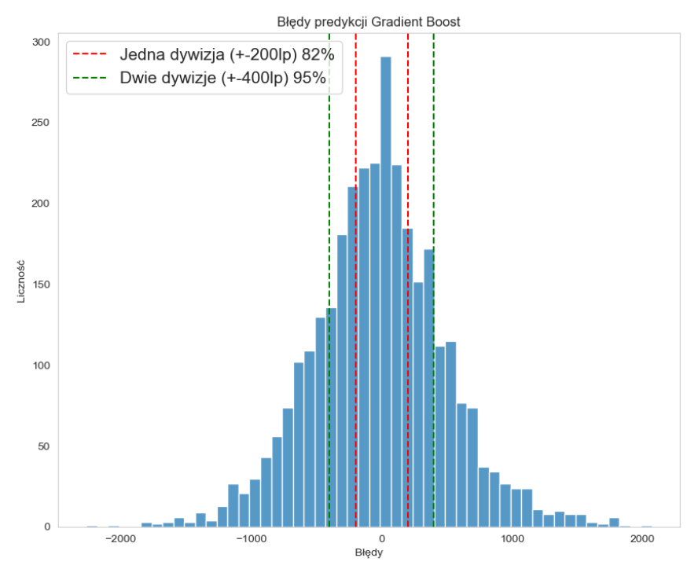
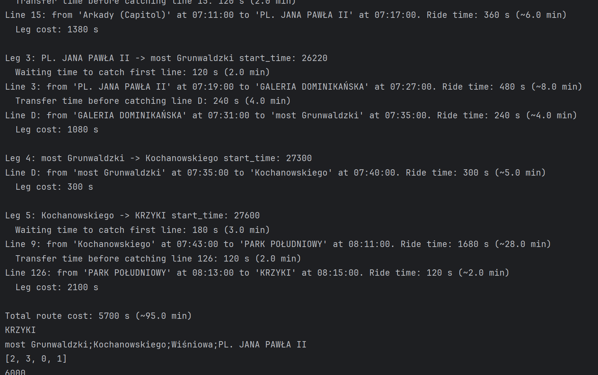

About Me
Hello, my name is Mikołaj and I am a 3rd year Applied Computer Science Student at Wroclaw University of Science and Technology.
I'm passionate about software development and data analysis, with experience (basic so far :] ) in multiple programming languages and frameworks. My goal is to create innovative solutions that solve real-world problems.
Download my CV!My Projects
JakDoRoweruje
A mini-project inspired by JakDojade app. JakDoRoweruje will help you route from point A to B using public bicycles in the city.
This application uses custom routing algorithms to find the optimal path between bicycle stations while minimizing walking distance and travel time.
Wot Mobile
Mobile version of tomato.gg. A comprehensive application for World of Tanks stats tracking on mobile devices.
Features include player statistics, tank performance analysis, battle history, and session tracking to help players improve their gameplay.

League of Legends Match Analysis
Data scraping and analysis project focused on game performance metrics. I scraped all data from Riot API, processed it in Python using Pandas and NumPy libraries.
The analysis includes various machine learning models from Scikit-Learn to predict match outcomes and identify key performance factors that contribute to winning games.

Wroclaw Public Transport Optimizer
A* and Dijkstra route finder and optimizer.
Data was given in .csv format. I developed comfort and time mode, penalising transfers in comfort mode
Feel free to ask about that project, as there is no frontend made by me. However, truly interesting project.